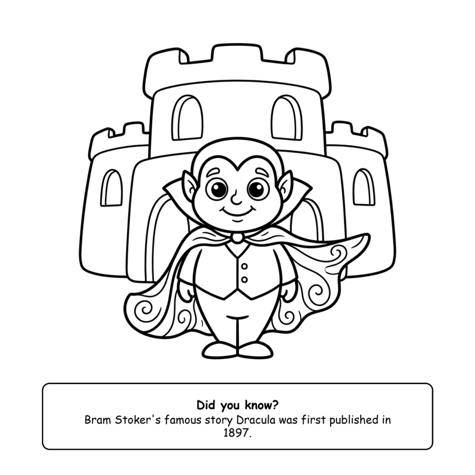
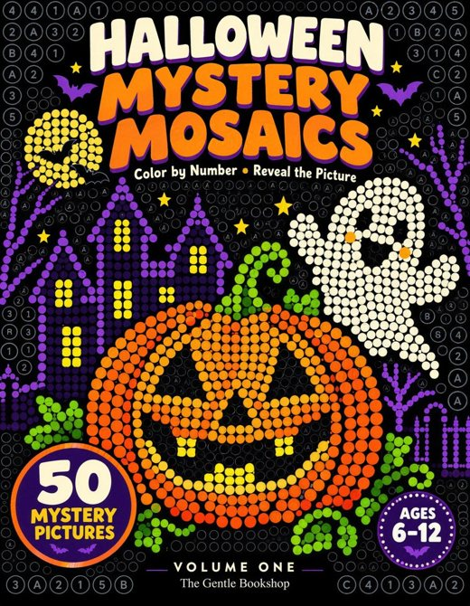
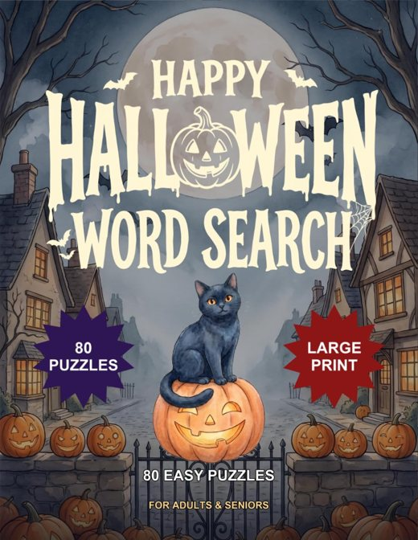

Ages 4 and up, teens and adults
Bold and Easy, with a fun fact on every design
Thick friendly lines and big spaces: Dracula, Frankenstein, witches and mummies, each with a "Did you know?" box.
Every set below is a real PDF of five pages from one of our Halloween books. Pick the one that suits your little monster (or yourself), print it on ordinary Letter or A4 paper, and start colouring. If you love it, the whole book is on Amazon.

Thick friendly lines and big spaces: Dracula, Frankenstein, witches and mummies, each with a "Did you know?" box.

Busy scenes with twelve little things to spot on every page. Find them, then colour the whole scene.

Colour each numbered circle and a hidden Halloween picture slowly appears.

Big, easy-to-read letters with the words running forwards. A calm October puzzle.

Detailed shaded scenes made for coloured pencils: black cats, haunted manors, witches over rooftops.
Plain printer paper is fine for crayons and pencils. For markers, use thicker paper or put a spare sheet underneath.
The PDFs fit either size. Choose "Fit to page" in the print box.
Ages 4 to 8: Bold and Easy or Seek and Find. Ages 6 to 12: Mystery Mosaics. Grown-ups: Grayscale or the large-print Word Search.
Print one page per guest and put out a pot of crayons. It fills a quiet twenty minutes between games.